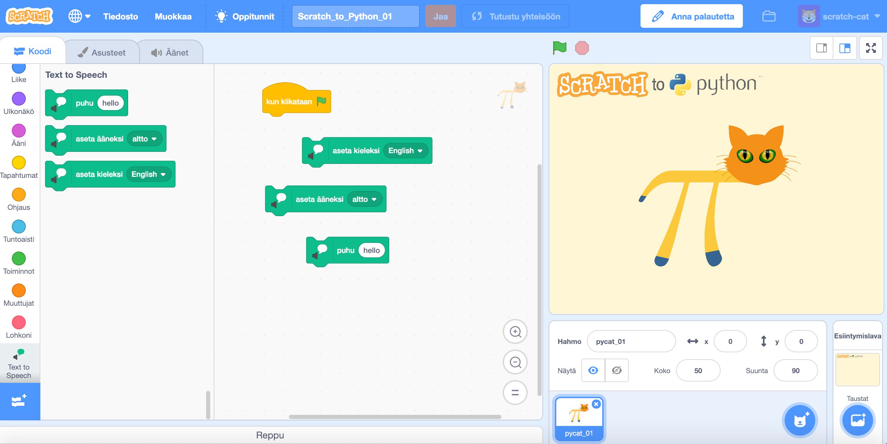
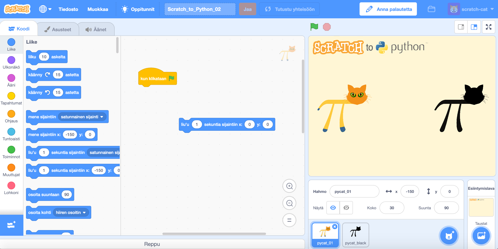

-palikassa.
-palikassa.
Ensimmäisessä haasteessa kunnioitamme perinteitä tekemällä "Hello, world!" -ohjelman. Tässä haasteessa emme vielä käytä pelaajaoppimisen metodia, vaan ratkaisemme haasteen ohjeita seuraamalla. Haaste on varmasti helppo ratkaista. Tarkoituksena on tutustua ohjelmointiympäristöön ja sen toimintaan.
-palikassa.Pääset haasteeseen joko "Haaste 00" -otsaketta tai haasteen kuvaa napauttamalla.
 Linkki haasteen Scratch_to_Python_00 -tiedostoon.
Linkki haasteen Scratch_to_Python_00 -tiedostoon.Scratch 3.0:n mukana Scratchiin tuli uusia ominaisuuksia. Tässä haasteessa teemme variaation edellisestä haasteesta ja saamme Pycatin puhumaan englanniksi kirjoittamamme tekstin. Tekstin saa muutettua puheeksi lisäämällä laajennuksen "Text to Speech", joka on tässä tehtävässä valmiiksi lisätty.
 -palikassa
-palikassaPääset haasteeseen joko "Haaste 01" -otsaketta tai haasteen kuvaa napauttamalla.
 Linkki haasteen Scratch_to_Python_01 -tiedostoon.Tässä haasteessa on tehtävänä saada Pycat liukumaan mustaan aukkoon mahdollisimman tarkasti. Tässä tehtävässä sovelletaan jo vähän pelaajaoppimisen metodia oikeiden koordinaattien löytämiseen.

Pääset haasteeseen joko "Haaste 02" -otsaketta tai haasteen kuvaa napauttamalla.
 Linkki haasteen Scratch_to_Python_02 -tiedostoon.